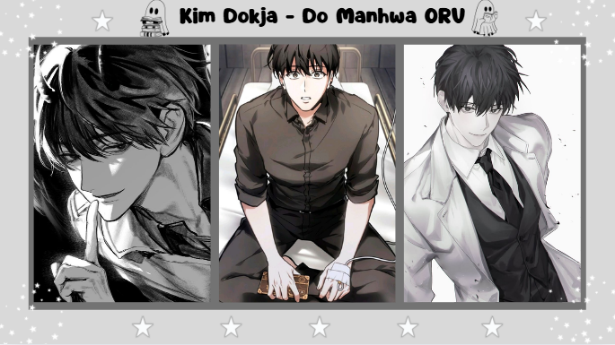
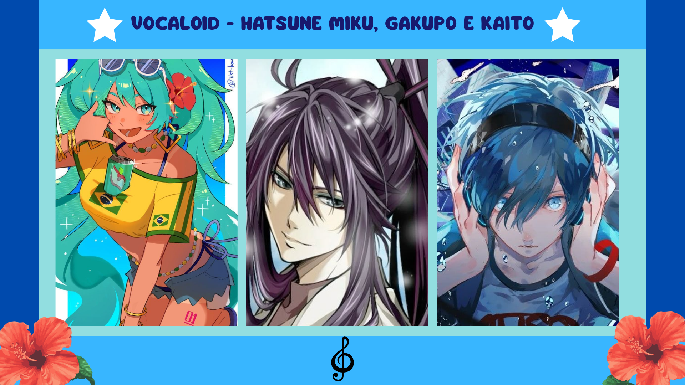
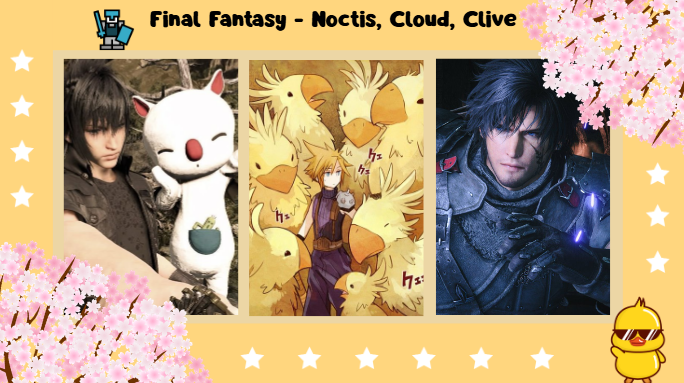

Meus projetos

Kim Dokja: Protagonista, gay e triste
Kim Dokja é o protagonista de ORV (Omniscient Reader's Viewpoint), um manhwa que fala sobre relacionamentos difíceis e diversos universos folclórico de vários países diferentes.

Vocaloid: Hatsune Miku e seus Amigos
Vocaloid é uma ferramenta (software) de voz, usado para criar músicas em sua maioria japonesas. Em cima das vozes são criados personagens que as remetem, a mais famosa é a Hatsune Miku que também é a minha Vocaloid favorita. Alguns outros que também gosto muito é kaito, gakupo, Luka.

Final Fantasy: Uma Franquia Magnifica de Jogos
Final Fantasy são vários jogos de um mesmo universo, muito famoso por seus protagonistas bonitos e "emos", os jogos falam sobre assuntos diferentes e suas várias histórias são muito cativantes.